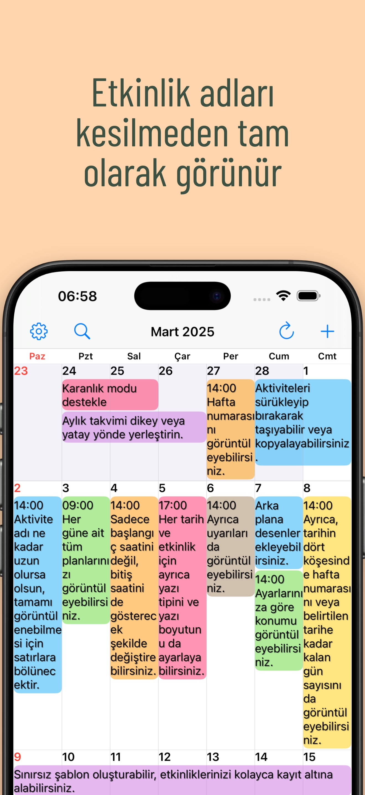
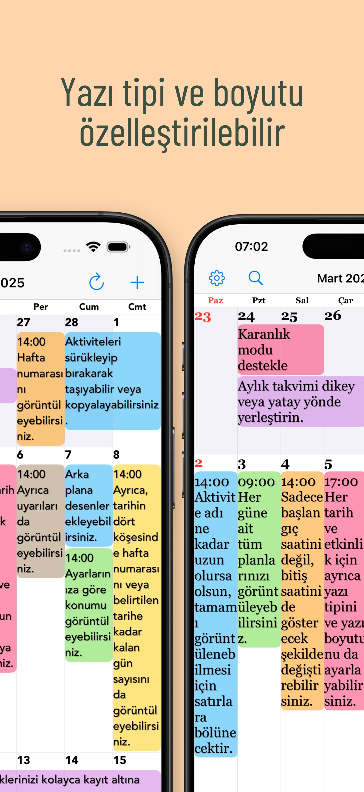
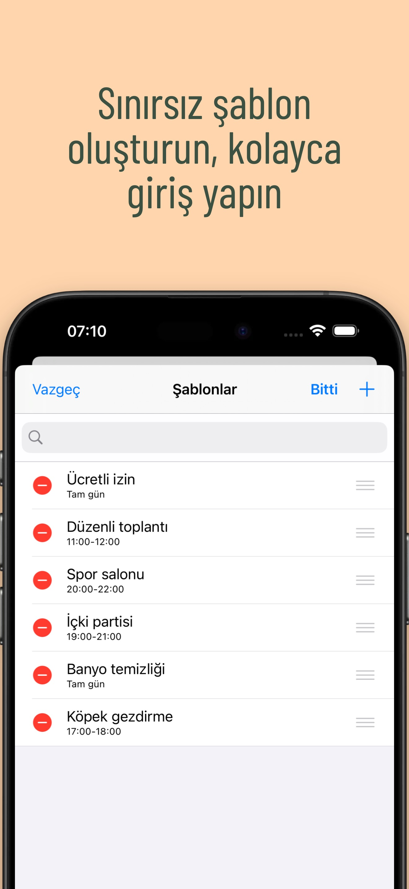

Size özgü bir görünüm.
Tema renklerini, etkinlik arka planlarını ve desenleri birleştirin.
Her güne daha net bakın.
Uzun etkinlik adları doğrudan aylık görünümde. Size uygun metin ve renklerle günlük planlarınızı bir bakışta görün.
iPhone ve iPad içinApp Store’da görüntüleÜcretsiz indirme · Uygulama içi satın alımlar

Günü planlamak biraz daha kolay.
İş ve özel hayatınız aynı yerde.GÜNLÜK HAYATINIZ İÇİN
Takviminizi planlama alışkanlıklarınıza uyarlayın.
Uzun etkinlik adları birden fazla satıra yayılır. Ayın tamamını görürken ayrıntıları okumak için yazı tipini ve boyutunu ayarlayın.

Takvim gruplarını kaydedin, iş ve kişisel planlar arasında tek dokunuşla geçiş yapın.
Toplantı, spor ve randevuları şablon olarak kaydedin. Bir tarihe iki kez dokunup şablon seçerek etkinlik ekleyin.

KÜÇÜK AYRINTILAR, BÜYÜK FARK.
Tema renklerini, etkinlik arka planlarını ve desenleri birleştirin.
iPad’e özel seçenekler dahil 20 araç takımı türünden seçim yapın.
Yalnızca girdiğiniz metinle eşleşen etkinlikleri gösterin.
SORULAR VE YANITLAR
İndirmesi ücretsizdir ve uygulama içi satın alımlar sunulur. Güncel fiyatları ve seçenekleri App Store’dan kontrol edin. App Store’da görüntüle
Evet, iPhone ve iPad’i destekler. Bazı araç takımları iPad’e özeldir. Güncel sistem gereksinimleri App Store’da bulunur.
Anımsatıcıları, tatilleri, hafta numaralarını ve ay takvimi bilgilerini destekler. Haftanın başlangıcı ve saat dilimi de ayarlanabilir.
Bildirimler Apple’ın Takvim uygulamasından gelir. Etkinliğin başlamasından veya bitmesinden önce uyarı ayarlayabilirsiniz.
DAHA NET GÜNLERE.
Size uygun bir takvimle başlayın.